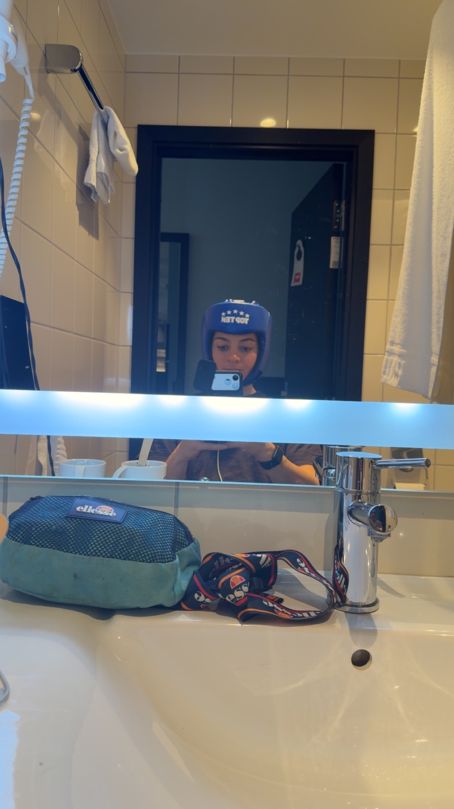
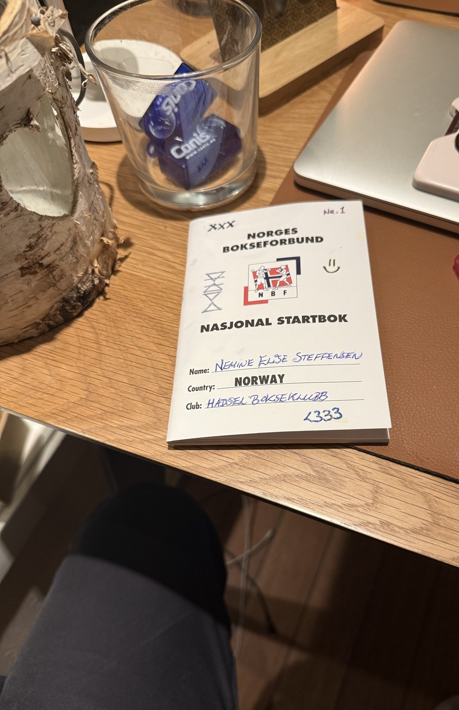
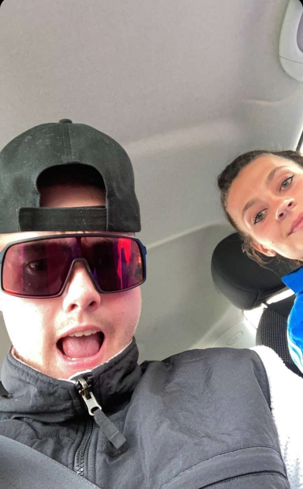
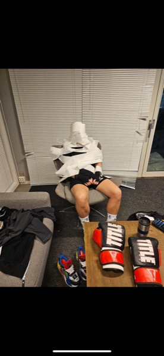
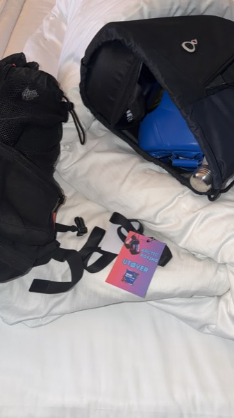
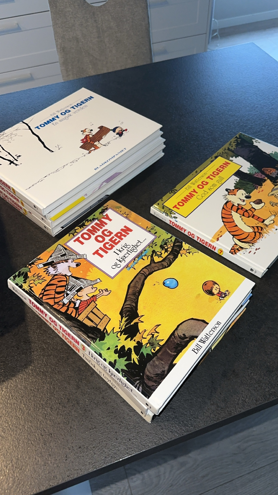
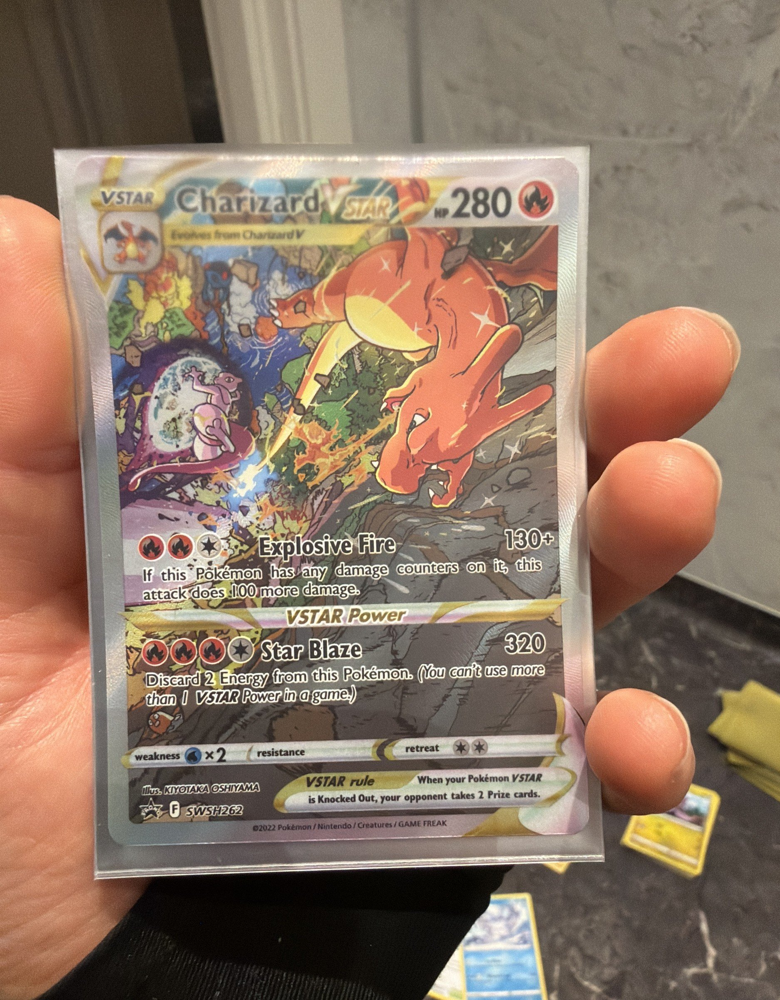
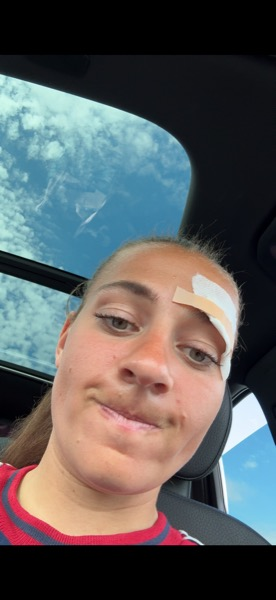

Arctic Boxing. Bodø Spektrum. 21. februar 2026. Min første kamp. Jeg gikk fra hjerneskade til boksekamp. Ikke planlagt. Bare nordlenning-logikk.Arctic Boxing. Bodø Spektrum. 21 February 2026. My first fight. I went from brain damage to boxing match. Not planned. Just the kind of stubborn you learn up north.
2-3 år med trening. Mer fotball i beina enn slag i nevene, men jeg følte meg som en vinner på denne arenaen. Jeg vet hva jeg gjør i en ring nå. Det visste jeg ikke da.2-3 years of training. More football in my legs than punches in my fists, but I felt like a winner in this arena. I know what I'm doing in a ring now. I didn't then.

Forberedelser.Preparation.
Jeg gikk inn på 66 kg. Opp fra 62. Motstanderen min lå på rundt 67. Ett kilo tyngre. Hun hadde seks kamper bak seg og lang trening inn mot hver eneste av dem. Jeg hadde null. Pulsen var allerede i taket bare av å stå på vekta.I walked in at 66 kg. Up from 62. My opponent was around 67. One kilo heavier. She had six fights behind her and long training going into every single one. I had zero. My heart rate was already through the roof just standing on the scale.
Null kamper mot seks. Greit. Noen må være først.Zero fights against six. Fine. Someone has to go first.
I norsk amatørboksing er hjelm obligatorisk for kvinner. Fint for meg. Hodet mitt har vært gjennom nok allerede. La det ligge i polstring litt til.In Norwegian amateur boxing, women wear headgear. Fine by me. My head has been through enough already. Let it stay in padding a little longer.

Hver norsk amatørbokser har en startbok. Et lite hefte der kampene føres inn for hånd. Min sier: Nemine Elise Steffensen. Hadsel Bokseklubb. Norway. Og <333.Every Norwegian amateur boxer has a start book. A small booklet where your fights are written in by hand. Mine says: Nemine Elise Steffensen. Hadsel Bokseklubb. Norway. And <333.
Teamet: begge trenerne mine, Maksym og Aleksandr. Edgar fra Hadsel Bokseklubb. Barry, Tim, Henning, Malvin, Sølvi, Ing-Martin, Markus. Mamma og pappa. Hadsel Bokseklubb dekket hotell og mat. Øksnes Entreprenør stilte også opp den uka.The team: both my coaches, Maksym and Aleksandr. Edgar from Hadsel Bokseklubb. Barry, Tim, Henning, Malvin, Sølvi, Ing-Martin, Markus. Mom and dad. Hadsel Bokseklubb covered hotel and food. Øksnes Entreprenør also stepped up that week.
Første kamp sier alt om hvem som dukker opp. Denne gjengen stilte. De glemmer du ikke.First fight tells you everything about who shows up. This crew did. You don't forget them.

Mamma og pappa hadde hundene mine med, Kriger og Blue. Jeg fikk herje med dem før kampen. To schæfere som ikke forstår boksing. Det var akkurat det jeg trengte.Mom and dad brought my dogs, Kriger and Blue. I got to mess around with them before the fight. Two shepherds who understand nothing about boxing. Exactly what I needed.

Natta før.The Night Before.
Vi sjekket inn i Bodø kvelden før kampen. Trenerne, Edgar, familien, hundene. Noen på hotell, noen på Airbnb. Etterpå var jeg sikker på at vi hadde vært der i tre dager. Vi var der to netter. Sånn gjør adrenalin med tid. Alt strekker seg ut og du husker hvert minutt som om det var en hel kveld.We checked in to Bodø the night before the fight. Coaches, Edgar, family, dogs. Some at the hotel, some at an Airbnb. Afterwards I was sure we'd been there for three days. We were there two nights. That's what adrenaline does to time. Everything stretches and you remember every minute like it was a whole evening.

Jeg lå i senga og stirret i taket med et hode fullt av Tommy og Tigern-striper og boksekamper som ikke fantes ennå. Tre netter med dårlig søvn allerede. En hjerne som nektet å skru seg av.I lay in bed staring at the ceiling with a head full of Calvin and Hobbes strips and boxing matches that didn't exist yet. Three nights of bad sleep already. A brain that refused to turn off.
Jeg hadde kvetiapin i toalettmappa. En medisin jeg fikk etter at en annen medisin prøvde å ta meg ut. Den hjalp da det var som verst. I Bodø var det adrenalinet som styrte.I had quetiapine in my toiletries bag. A medication I got after another medication tried to take me out. It helped when things were at their worst. In Bodø the adrenaline was in charge.
Så jeg lå der og tenkte på Tommy og Tigern. Calvin and Hobbes på norsk. Når du ikke kan sove og hodet ditt kjører på fullt, finnes det verre ting å ligge og tenke på enn en seksåring som snakker til en utstoppet tiger om eksistensen. Han er redd. Han er liten. Han later som han ikke bryr seg for ikke å bli knust. Jeg kjente meg igjen i det den kvelden. Jeg var ikke klar for en boksekamp. Jeg var aldri klar for noe av det som har kommet. Det har aldri stoppet meg.So I lay there thinking about Calvin and Hobbes. In Norwegian we call them Tommy og Tigern. When you can't sleep and your head is running full speed, there are worse things to think about than a six-year-old who talks to a stuffed tiger about existence. He's scared. He's small. He pretends not to care so he won't get crushed. I recognised myself in that, that night. I wasn't ready for a boxing match. I was never ready for any of it. That's never stopped me.

Hotellmaten var jævlig god. Jeg valgte sunt, men fikk virkelig kjenne på hvor vanskelig det er å følge NextElite-protokollen på reise. Alt i miljøet endrer seg. Rutinene mine er bygd for hjemme. For brettet mitt, supplementene mine, kjøleskapet mitt. Et hotellrom i Bodø er ikke det. Jeg gjorde mitt beste.Hotel food was really good. I ate clean, but I felt how hard it is to follow a NextElite protocol on the road. Everything in the environment changes. My routines are built for home. For my tray, my supplements, my fridge. A hotel room in Bodø is not that. I did my best.
Til neste kamp er planen en annen. Ernæring og kosttilskudd helt inn. Bedre søvn. Neste gang har jeg bare tannbørsten i toalettmappa.For the next fight the plan is different. Nutrition and supplements all the way in. Better sleep. Next time the toiletries bag just has the toothbrush.
Det som slo meg ut i Bodø var ikke motstanderen. Det var alt jeg hadde med meg inn i ringen.What knocked me out in Bodø wasn't the opponent. It was everything I brought into the ring with me.
Kampen.The Fight.
Du kommer ikke til å se bilder fra selve kampen. Norsk lov er streng på retten til eget bilde. Bildene her stanser ved ringtauet.You won't see photos from the fight itself. Norwegian law is strict on the right to your own image. The images here stop at the ropes.
Jeg hadde aldri stått i en ekte ring før. Hadde sparret. Gått miles med pads. Sett kamper live. Ingenting av det er en ring. Alt du har øvd forsvinner i det noen treffer tilbake.I'd never been in a real ring before. I'd sparred. Done miles on the pads. Watched fights live. None of that is a ring. Everything you practised disappears the moment someone hits back.
De første sekundene var gode. Jeg fikk inn noen skikkelige slag. Deretter gikk jeg rett inn i sjokk. Hva faen er det jeg deltar på. Fikk litt boksestopp. Mistet bevegelsen, mistet pusten, mistet den versjonen av meg som hadde trent for dette.The first seconds were good. I landed some clean shots. Then I walked straight into shock. What the hell did I sign up for. Got a bit of ring freeze. Lost the movement, lost the breath, lost the version of me that had trained for this.
I siste runde hentet jeg meg litt inn. Men tre netter med dårlig søvn var allerede bokført. Jeg var sliten. Jeg tapte på split decision 2-1. To dommere for henne, én for meg. Dommerne var ikke engang enige om hvem som vant.In the last round I pulled it back a bit. But three nights of bad sleep were already on the ledger. I was tired. I lost on split decision 2-1. Two judges for her, one for me. The judges couldn't even agree on who won.
Fra sidelinja skar én stemme gjennom alt. Pappa. KOM IGJEN NEMINE. Det var den eneste stemmen jeg hørte hele kampen. Ikke helvete om jeg ga opp.From the sideline, one voice cut through everything. Dad. KOM IGJEN NEMINE. It was the only voice I heard the whole fight. No way in hell I was giving up.

Etterpå.After.
Jeg bokset en dritt kamp. Alle andre syntes den var jævlig imponerende. Jeg syntes den var dritt. Kanskje det er derfor jeg alltid blir bedre.I fought a shit fight. Everyone else thought it was impressive as hell. I thought it was shit. Maybe that's why I always get better.
Jeg var stoked likevel. Samme følelsen som da jeg hoppet fallskjerm på NTG. Sekunder der du er mer levende enn i hele året før. Men stoked er ikke fornøyd. Jeg liker å vinne. En split decision der dommerne ikke engang var enige er ikke godt nok. Ikke for meg.I was stoked anyway. Same feeling as when I jumped out of a plane at NTG. Seconds where you're more alive than in the whole year before. But stoked is not satisfied. I like to win. A split decision where the judges can't even agree is not good enough. Not for me.

Jeg tapte kampen. Jeg vant tilbake selvrespekten. Hvor rått er det ikke å gå fra hjerneskade til boksekamp.I lost the fight. I got my self-respect back. How wild is it to go from brain damage to a boxing match.
Neste kamp.Next fight.
NextElite-protokollen helt inn til kampdagen. Ordentlig søvn. Flere sparringrunder. Hadsel Bokseklubb bygger nytt treningsanlegg med ordentlig ring. Der skal jeg lære at fire hjørner ikke er noe nytt før neste gang det teller.NextElite protocol all the way to fight day. Real sleep. More sparring rounds. Hadsel Bokseklubb is building a new facility with a real ring. That's where I'll learn that four corners are nothing new before the next time it counts.
Dritt kamp. Neste kamp vinner jeg.Shit fight. Next fight I win.